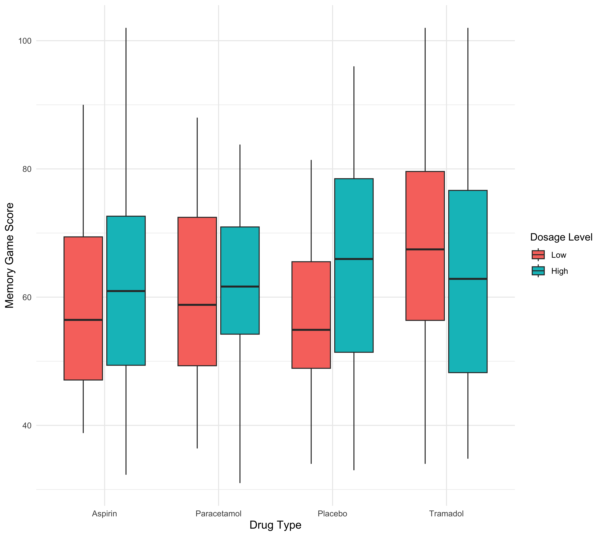
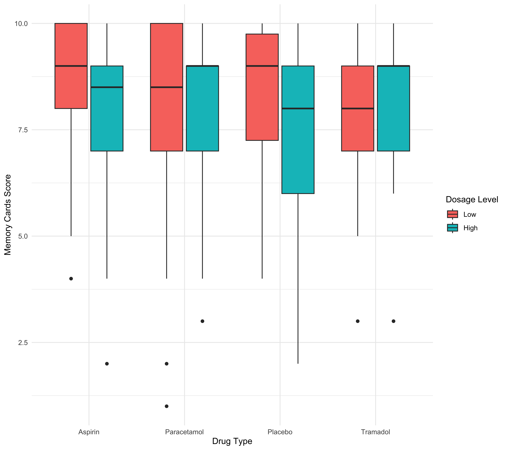

Effects of Different Pain Relievers and Dosages on Cognitive Retention
Exploratory Data Analysis (EDA)
1 Introduction
1.1 Relevant Background
Pain can make everyday tasks harder, particularly when mental focus and clarity are required. Common pain relievers like Aspirin, Paracetamol, and Tramadol are often used to reduce physical discomfort, but their impact on cognitive functions is not well understood. Recalling information, a task that demands mental effort, becomes more difficult when we’re in pain. This study investigates how different pain relievers (Aspirin, Paracetamol, and Tramadol) at standard dosages affect memory performance. It also looks at how varying dosages of each drug influence memory function. Since the ability to recall information is essential in many situations, understanding how pain relief might impact cognitive performance is important for managing pain without affecting productivity.
1.2 Research Questions
- How does the type of pain reliever (Aspirin 500 mg, Paracetamol 500 mg, Tramadol 50 mg, and Placebo) affect cognitive task performance?
- How does the dosage (low vs. high) of each drug affect cognitive retention, while accounting for confounding factors like age?
1.3 Study Design
This study involves 2 factors, pain reliever type (4 levels) and dosage(2 levels). Crossing them provides us with 8 treatment groups, with 30 participants assigned to each. The groups are as follows:
- Aspirin 500 mg (Low)
- Aspirin 1000 mg (High)
- Paracetamol 500 mg (Low)
- Paracetamol 1000 mg (High)
- Tramadol 50 mg (Low)
- Tramadol 100 mg (High)
- Placebo (Low)
- Placebo (High)
This results in 240 total observations (8 × 30 = 240).
1.4 Confounding Variable: Age
To reduce bias, we consider to control the experiment by controlling participant ages to be 18+. Hence in this study age acts as a confounding variable. Participants will be categorized into three groups evenly to prevent bias created through age. The groups are as follows:
- 18–34 years
- 35–50 years
- 50+ years
1.5 Quantitative and Qualitative Variables
In our study the quantitative and qualitative variables are as follows:
- Quantitative variables: Memory Game Scores, Memory Test Cards Scores
- Qualitative variables: Type of pain reliever, dosage level (low/high)
1.6 Data Analysis Method
We will use one-way ANOVA to analyze the effects of different pain relievers on memory performance. Similarly, we will use two-way ANOVA to analyze the effects of different dosage levels per drug type on memory performance and cognitive retention.
2 Summary Statistics
2.1 Summary of quantitative variables
Table 1 shows the summary statistics of memory game scores before and after the treatment. The mean is similar across all groups, however, the standard deviation (SD) is relatively high. The median game scores remain close to the mean, and the IQR (Interquartile Range) is smaller than the SD. The cards memory task shows little change before and after treatment, suggesting that pain relievers may not have a major effect on this specific task.
Evident through the results on ?@tbl-summary-6, Paracetamol is the drug that has the greatest mean & median improvement in the game scores after administering the drug (without dosage taken into account). Aspirin appears to negatively impact the results of the game after being given to people, this was seen through the mean and median improvements.
| Dosage | Count | Percentage |
|---|---|---|
| High | 120 | 50 |
| Low | 120 | 50 |
| Age_Group | Count | Percentage |
|---|---|---|
| 18-34 | 80 | 33.33 |
| 35-50 | 80 | 33.33 |
| 50+ | 80 | 33.33 |
2.2 Summary of counts and percentage for qualitative variables
Table 2 shows the distribution of participants across drug types. Aspirin, Paracetamol, and Tramadol, and Placebo each have 60 participants (25%), ensuring balance.
Table 3 shows the dosage levels assigned to participants. There is an equal split between high-dose (120 participants, 50%) and low-dose (120 participants, 50%) conditions.
2.3 Confounding Variable
Table 4 shows the breakdown of age groups, which is a confounding variable in this study. The three age groups: 18–34, 35–50, and 50+ each have 80 participants (33.33%).
3 Plots


3.1 Game Score Distribution Before and After Treatment
?@fig-boxplot-scores shows the distribution of memory game scores before and after treatment across different drug types using box plots.
- The median scores for all drugs appear similar before treatment.
- Tramadol has a higher median than other drugs both before and after treatment.
- The Placebo group has a slightly lower median score compared to other drugs.
- There is one outlier in the Tramadol group before treatment.
- The (IQR) is similar across all drug types, though Tramadol sees a decrease in its IQR in the memory game scores after treatment.
These boxplots provide an initial comparison of cognitive performance changes before and after drug administration.
3.2 Memory Card Score Distribution Before and After Treatment
?@fig-boxplot-cards shows the distribution of memory card scores before and after treatment across drug types.
- Before treatment, the scores are relatively high across all groups, with Paracetamol and Placebo showing slightly higher medians than the others.
- After treatment, the distributions remain similar, though there is a slight increase in spread for Aspirin, Paracetamol, and Placebo.
- There is a slight decrease in the IQR of Tramadol.
- Outliers are present in all groups, indicating some variability in memory card performance across individuals.
4 Assumptions
# Fit the model (Two-Way ANOVA using lm)
anova_model <- lm(memory_game_score ~ drug * dosage_level, data = clean_data)
# Extract Coefficients into a Data Frame
anova_table <- as.data.frame(summary(anova_model)$coefficients)
names(anova_table) <- c("Estimate", "Std. Error", "t value", "Pr(>|t|)")
# Format p-values for readability
anova_table <- anova_table %>%
mutate(`Significance` = case_when(
`Pr(>|t|)` < 0.001 ~ "***",
`Pr(>|t|)` < 0.01 ~ "**",
`Pr(>|t|)` < 0.05 ~ "*",
`Pr(>|t|)` < 0.1 ~ ".",
TRUE ~ ""
))
# Create Table Output
kable(anova_table, format = "html", digits = 3) %>%
kable_styling(full_width = FALSE, bootstrap_options = c("striped", "hover", "condensed"))| Estimate | Std. Error | t value | Pr(>|t|) | Significance | |
|---|---|---|---|---|---|
| (Intercept) | 60.020 | 2.839 | 21.138 | 0.000 | *** |
| drugParacetamol | 1.327 | 4.015 | 0.330 | 0.741 | |
| drugPlacebo | -3.053 | 4.015 | -0.760 | 0.448 | |
| drugTramadol | 7.417 | 4.015 | 1.847 | 0.066 | . |
| dosage_levelHigh | 2.180 | 4.015 | 0.543 | 0.588 | |
| drugParacetamol:dosage_levelHigh | -1.290 | 5.679 | -0.227 | 0.820 | |
| drugPlacebo:dosage_levelHigh | 6.517 | 5.679 | 1.148 | 0.252 | |
| drugTramadol:dosage_levelHigh | -4.880 | 5.679 | -0.859 | 0.391 |
4.1 Checking Model Assumptions
Repeated Measures ANOVA (To be changed) When performing a repeated measures ANOVA, it is essential to verify that the underlying assumptions of the test are met. These assumptions include:This document outlines the methods and tests used to verify these assumptions.
The assumption of normality was tested using the Shapiro-Wilk test. The Shapiro-Wilk test evaluates the null hypothesis that the data is normally distributed. The test statistic ( W ) and the corresponding ( p )-value were calculated for each combination of the factors (Drug, DosageLevel, and Time).
If the ( p )-value is greater than 0.05, we fail to reject the null hypothesis and assume normality. Otherwise, the normality assumption is violated.
Q-Q plots were generated to visually inspect the normality assumption. If the points in the Q-Q plot lie approximately on the reference line, the data can be assumed to be normally distributed.
The assumption of sphericity was tested using Mauchly’s test. Sphericity refers to the condition where the variances of the differences between all combinations of related groups are equal.
If the ( p )-value from Mauchly’s test is greater than 0.05, we fail to reject the null hypothesis and assume sphericity. If the assumption is violated, corrections such as Greenhouse-Geisser or Huynh-Feldt should be applied.
The assumption of homogeneity of variance was tested using Levene’s test. This test evaluates whether the variances of the dependent variable are equal across all groups formed by the combinations of the factors (Drug, DosageLevel, and Time).
If the ( p )-value from Levene’s test is greater than 0.05, we fail to reject the null hypothesis and assume homogeneity of variance. If the assumption is violated, transformations or alternative statistical methods may be required.
Boxplots were generated to visually inspect the homogeneity of variance. If the boxplots show similar spreads across groups, the assumption is likely met.
The results of the assumption tests (Shapiro-Wilk, Mauchly’s, and Levene’s) were used to determine whether the assumptions of normality, sphericity, and homogeneity of variance were met. If any assumptions were violated, appropriate corrections or alternative methods were considered before proceeding with the repeated measures ANOVA.
5 Check for Homogeneity of Variance using Levene’s Test
levene_test <- leveneTest(GameScore ~ Drug * DosageLevel * Time, data = clean_data) print(levene_test)
6 Visual check for homogeneity of variance using boxplots
ggplot(clean_data, aes(x = interaction(Drug, DosageLevel, Time), y = GameScore)) + geom_boxplot() + theme_minimal() + theme(axis.text.x = element_text(angle = 45, hjust = 1)) + ggtitle(“Boxplots for Homogeneity of Variance Check”)
```
We assessed the homogeneity of variance and normality of residuals using diagnostic plots to validate the assumptions of our ANOVA tests. (?@fig-assump-one & ?@fig-assump-two).
One-way ANOVA
Independence: For our one-way ANOVA model, we have independence because our observations are independent within and across the groups i.e all participants were randomly assigned a pain reliever, and there was no relationships between observations (i.e repeated participants, treatments etc.)
Homogeneity of Variance: The reference line in ?@fig-assump-one relatively flat and horizontal which indicates that variance is approximately equal across groups. Thus, the assumption of homogeneity of variance is not significantly violated.
Normality of Residuals: The residuals are approximately normally distributed in ?@fig-assump-one since the density plot on the right appears close to a normal distribution.
Two-way ANOVA
Independence: For our two-way ANOVA model, the different combinations of pain reliever type and dosage levels were randomly assigned to all participants, in random order.
Homogeneity of Variance: In ?@fig-assump-two the left plot shows some deviation from a perfectly flat line and has minor fluctuations, especially at certain levels of drug type and dosage. Despite some variation, the overall trend does not show extreme violations of homogeneity.
Normality of Residuals: In ?@fig-assump-two the density plot on the right shows that the residuals follow a roughly normal distribution even though minor deviations are present.
Conclusion
Both models satisfy the assumptions of homogeneity of variance and normality of residuals well enough. There are slight deviations in the two-way ANOVA model, but they are not severe enough to invalidate the analysis. Therefore, we proceed with the ANOVA tests.